釣行日誌 故郷編
2019/06/28-30 長岡技術科学大学 釣り同好会 第３回ＯＢ会釣行
2019年６月28日の朝は５時30分に起床した。トースト２枚とコーヒーでの朝食を済ませ、部屋から玄関前の駐車場までクロスバイクを収めた輪行袋とウェストバッグを運び出し、配車予約しておいたタクシーを待つ。
タクシーは６時20分に来た。女性の運転手さんが降りてきてトランクを開けてくれるが、クロスバイクを収めた輪行袋は大きすぎて入らないので、後部座席に自分で積み込む。助手席の小物をよけてくれたので、座ってドアを閉め、いよいよ今年の釣り同好会OB会釣行が始まる。
ところが、なかなか旅は始まらない....
昨年のOB会釣行では、一緒に釣った谷倉先輩が寛大にポイントを譲って下さったので、僕は実力以上の大物イワナを釣り上げてしまい、当日の大物賞受賞→来年の幹事役決定！ という流れで、今日まで幹事としていろいろと事前調整や毎回お世話になっている荒沢ヒュッテさんとの連絡などを行ってきた。
すでに昨年の７月くらいから第１次アンケート票を顧問の丸山先生やOBの皆さんに送信し、希望を集約し始めた。それまでは２年に１回開催しよう、となっていたのだが、とても楽しいので毎年開催したいという声も多く、昨年はスケジュールの都合で参加できなかったメンバーもいらしたことから、隔年開催か毎年開催かをヒアリングした。さらに、今年行うのであれば開催時期はいつ頃が良いのか？ トローリングと渓流釣りのベストシーズンの違い、皆さんの仕事の都合などを鑑み、５月上旬の雪解け時期から９月下旬の禁漁直前時期まで、15パターンの中から希望時期を伺った。
その結果、毎年開催すること、参加できる人が最も多かったこと、双方の釣り方の絶頂期となる６月中旬から７月中旬にかけての５パターンに絞り込み、第２次アンケートを行った。最終的に３月11日の時点で、６月29日（土）～30日（日）の週末に行うことが決定したのだった。予定としては昨年とほぼ同様で、土曜日１日釣りを楽しみ、その晩に宴会、日曜日は温泉に入って解散、という流れである。
そこからはトントンと準備が進行し、ゴールデンウィーク前には宿の予約を済ませ、28日（金）から参加するメンバーが決まった。金曜の夜にバーベキューができたら良いね！という声を受け、荒沢ヒュッテさんに問い合わせ、夕方にバーベキューができるかどうか、できるとすれば用意すべき品や食材、飲み物の手配方法などを伺った。梅雨時であるため、天気が悪いようであれば普通の夕食に切り替えてもらうようにして、天気予報やご主人の現地情報から判断し、遅くとも26日（水）の夜にはバーベキュー実行の可否を決めることとなった。
さらに、現在の母校の釣り同好会メンバーとも交流するために、土曜日の宴会だけでも参加してもらったらどうだろうか？ ということで、ネットで情報を調べ、見つかったホームページに記載されていた連絡先にメールしてみたが、残念ながら返信は無かった。
また、2016年度の宮田先輩の大物賞、湖岸からキャスティングで釣り上げた47cmの大イワナの写真が素晴らしかったので、トリミングや色調補正、シャープネスを掛けるなどしてから新しいインクジェットプリンターでA4写真用紙に印刷すると、なかなか見事な１枚に仕上がった。
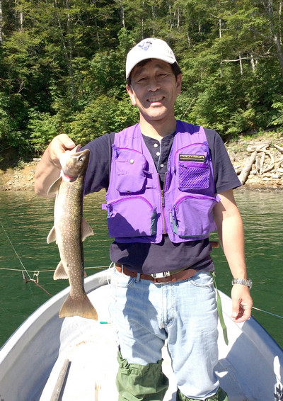
それから、僕がホームセンターをうろついていた時にコクヨのA4版賞状用紙というものを見かけ、これで大物賞の表彰状を作ったら良いのでは？と思い、ワープロで作ってみた。さらに、開高健記念館 を訪れた時に買った常見忠さんの名作スプーン「バイト、金色 開高さんのサイン刻印入り」が本棚で眠っていたので、それを記念品にしたらどうかと考えてみた。前回幹事の岡田君と釣り同好会の創設者である谷倉先輩に相談したところ、
「そうなると、湖部門と渓流部門とが必要だなぁ。」
ということになり、僕の仕事の関係で知っていた「吉見出版」というトロフィーやメダル等の顕彰用品を売っている会社の直販店で、釣り人の刻印が入った金メダルを購入し、同様の品をもう一つアマゾンで購入した。メダルには綺麗な首掛けリボンが付いているので、メダルの保持リング部にA7版のプラスチックケースを取り付け、縮小版の写真と表彰状画像を入れた。メダルは残念ながら毎年の受賞者で持ち回りになるので、これで過去の受賞者の栄誉がすぐにわかるようになった。
僕の2018年度の大物賞写真と賞状、縮小版も作成し、栄誉を讃える準備が整った。
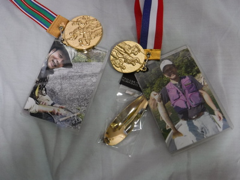
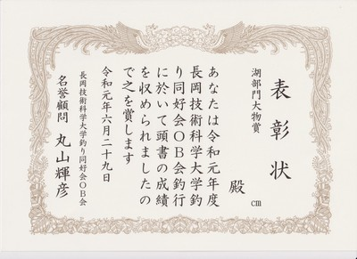
開催が近づいた６月に入ると、坂田先輩から現地の事前釣行画像、残雪状況、道路情報などがもたらされ、金曜入り各メンバーの行程が詰められていった。
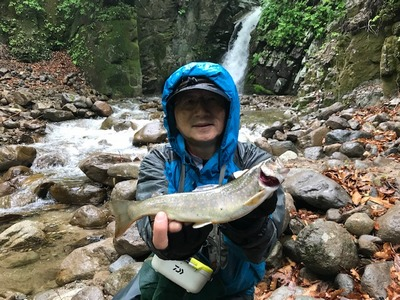
坂田さんの大物イワナの写真が配信されたので、メンバーの皆さんの士気は一気に高まった。(笑)
僕の準備は、クロスバイクのパンクに備え、新品のチューブを２本購入してサドルバッグに入れた。小型空気入れはバルブアダプターなどの小さな付属品を無くさないようビニール袋に包んでフレームに装着した。釣り具は、昨年の釣行時には雪解け水が非常に冷たかったのでフライフィッシングにはまだ早いとにらみ、今年もルアーで挑戦することにした。早い話、易きに流れたのだ。リップが破損していたいくつかのミノーを修理し、新しい６ポンドラインをリールに巻き直した。などとあれこれ準備をしていたら、腕時計のゴム製ベルトに付いているループ（定革）が切れてしまった。
『うわ！ また大事な旅行の前に腕時計のトラブルだ....』
気に入っている腕時計だが、2010年のニュージーランド釣行の時も、出発の朝、豊橋駅でバックパックを担いだ弾みでベルトを留めているばね棒が外れてしまったことがあったのだ。あの時は、関西国際空港のビル内にあった時計店で修理して事なきを得た。別のを買う気にはなれないし、今すぐ同じモデルを注文しても、出発までに届くかは微妙なタイミングだった。そこで、雑多な小物入れをさばくってみたところ、昔買ってすぐに動かなくなったセイコーブランドの自動巻き腕時計（安価な海外生産品）のベルトが出てきたのでそれを取り付けた。しかし、このベルトは、穴に刺さって固定する機能を持つ「つく棒」という部品が無くなっていた。しょうがないので今まで付いていたゴム製ベルトの部品を移植してなんとか使えるように修理することが出来た。これで安心した。
26日（水）の時点で、週末の天気予報は雨模様であり、荒沢ヒュッテさんに連絡して残念ながら金曜夜のバーベキューは中止する旨を伝え、普通の夕食の準備をお願いした。
27日（木）の仕事帰り、宮田さんと谷倉さんに頼まれたミミズを仕入れに釣具店に向かう。昨年はたくさん買い過ぎて残ってしまったので、今年は普通サイズ１箱、太ミミズ１箱だけにしておいた。電話で予約しておいたのでスムーズに購入できた。帰宅してから、明日持って行くのを忘れないように速やかにウェストバッグに詰めた。
夜になって台風３号が接近する中、宇部に勤務している岡田君から、これから飛行機で羽田へ向かうとの報告がフェイスブックに入った。無事東京の自宅に戻れるのか少し心配になったが、いつもの薬を飲んで早めに就寝、明日に備えた。
2019/06/28（金）
いよいよタクシーが豊橋駅の新幹線口に向けて走り出す。今年は日産のリーフ、電気自動車である。運転手さんに走行可能距離やらフル充電に必要な時間、乗り心地などを伺っているとあっという間に駅に着いた。ロッドケースを入れた輪行袋を担いでエスカレーターで２階に上がり、幅の広い改札ゲートを選んで通過し、ホームへ降りる。
こだま630号が来るまではだいぶ時間があるので、ベンチに座って持参した名著、Ｈ．ウィリアムスン著「鮭サラー その生と死」を読む。
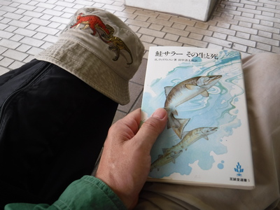
開高さんのエッセイや講演ではよく紹介されていた、全世界の釣り人必読の書と言われる傑作である。大学時代にも一度読んだ記憶があるのだが、細部はほとんど忘れていた。２年前にもう一度古本で購入していたので、この長編を読むには絶好の機会である。１尾の大西洋鮭の一生をメインストーリーとして、その周辺の森羅万象を細部に至るまで綿密に描写されており、実に読み応えがある。
数十ページを読んだところで意外と早く新幹線がホームに滑り込んできて、指定した車両最後列の座席後ろのスペースへ輪行袋を入れる。今年は他のお客さんがスマホを充電していて、コードがスペースを塞いでいることもなく、楽にクロスバイクが収まった。谷倉先輩が待つ新富士着までは約１時間である。乗り過ごしては悲惨なことになるので、読書はせず、車窓の外を飛び去ってゆく風景をぼんやり眺める。天気は曇りがち。明日は大崩れしなければ良いのだが....
新富士駅には 8:11に着き、輪行袋を担いで階段を上り、エスカレーターで降り、改札を出て左側のエントランスから駐車スペースへ歩いて行くと、すでに谷倉先輩の白いトヨタが停まっていた。
「おはようございます！ 今年もよろしくお願いいたします！」
「おはよう！ さぁ行くか！」
リヤシートを倒して広くなったスペースに収められた先輩の折りたたみ式電動自転車の上に、注意深く輪行袋を入れる。ハンドルの片方とリヤエンドが少々出っ張っているので、やや斜めにしてなんとか無事に収まった。
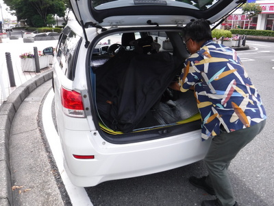
さぁ、ここから銀山平までは２人してのドライブだ。
駅から北に向かい、西富士道路へ向かう途中、灰色の雲の切れ間から富士山が頂きを現した。これは吉兆か？ 根拠は無いがとても縁起が良く思われ、明日の好釣果が約束されたような気がした。
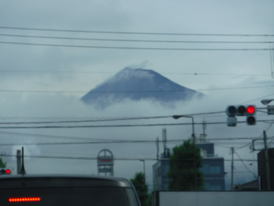
１年ぶりの再会で話が弾み、西富士道路から新東名への入り口を通り越してしまうというハプニングもあったが、すぐに気付いて引き返し、無事新東名に入って御殿場方向、はるか先の関越自動車道・髙坂パーキングエリアを目指す。そこで岡田君の車（宮田先輩、徳田先輩、中島先輩が乗車）と山口先輩の車と落ち合うことになっているのだ。
道中谷倉さんが、先日訪れた北海道での釣りについて話してくれた。iPhone を手渡してくれたので、保存されているたくさんの写真を見てゆくと、60cmオーバーの野生レインボーや船釣りで上げた大物大鮃（オヒョウ）など、迫力に圧倒された。
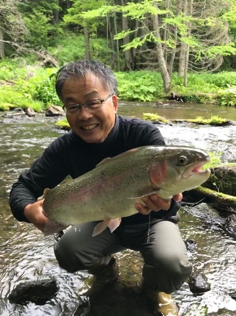
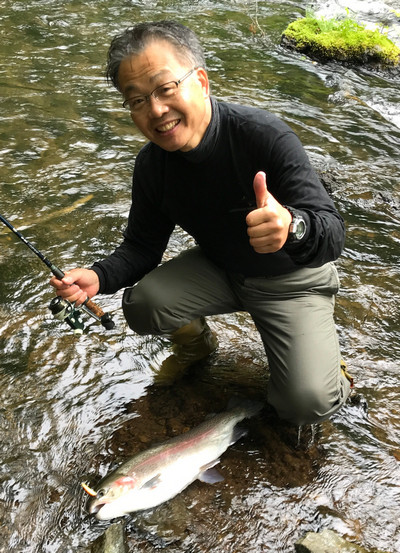
そのレインボーは、僭越ながら僕が昨年贈呈させていただいた往年の名機 ABU Cardinal 33（90年代に購入した復刻版、未使用品）で釣り上げたということで、とても嬉しかった。あのサイズ、しかも年代物のリールでも、かなり大きい魚と闘えるのだなぁと感心もした。
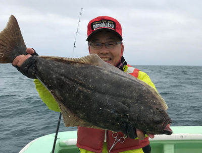
釣り談義で盛り上がっていると、髙坂サービスエリアに先に到着した山口さんからメールが入り、広いエリアのどのあたりが空いているか、待ち合わせ場所を説明してくれた。10:15頃に着くと、東京組の２台と無事合流できた。
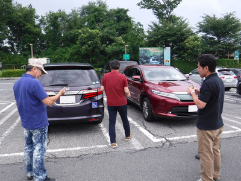
小休止の後、岡田君の車から中島さんが山口さんの車に移り、２・３・２人乗りの３台は、小出インターを目指して走り出した。
国境の長い関越トンネルを抜けると一面の曇り空。時折雨粒がフロントウィンドウに当たった。再び谷倉さんからスマホを渡され、慣れぬ手つきで操作して、小出インター付近の昼食場所を探した。僕は未だにガラケーなので、文字入力やスワイプ操作に苦労しながらもなんとかグーグルマップで検索し、たくさんヒットしたお食事処の営業時間や内部写真、ユーザーレビューまで見ることができるのには感心した。PCでは釣り場のチェックにグーグルマップを多用しているが、こういう用途では使ったことが無いのだ。（笑）
ヒットしたお店の中からトンカツ屋さんと、「小樽」というレストランに絞り込み、他の２台の皆さんに電話で相談すると、どちらでも良いですよ、という回答だったので、メニューを選べる「小樽」へ行くことに決めた。
いかにも釣れそうな魚野川の渓相を眺めつつ、ちょうど12時過ぎに小出インターに着いた。とりあえずすぐ近くのコンビニに寄って、谷倉さんは釣り上げたイワナを保存するための味噌を買い込んだ。そして３台はすぐ近くの「小樽」へ向かい、すぐに見つかった。小雨の中、停めた車から皆は慌てて店内に入った。
金曜前乗り組の７人は１年ぶりの再開に話が弾み、冗談や釣りの話を繰り出しながらめいめいお好みのランチをいただき、デザートも食べてお腹がくちくなった。
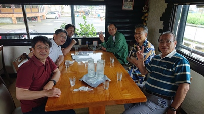
ランチのあとは、二手に分かれて、谷倉さんと僕は近くの釣具店へ、他の２台はスーパーマーケットへ向かい、夜の宴会用に食材や飲み物を仕入れに行った。またもグーグルマップの力を借りて探すと、近くの釣具店はすぐに見つかり、「マウンテンクリークハウス」という魚野川沿いの１軒に車を乗り入れた。実は、谷倉さんは長年愛用している魚籠（ビク）を忘れてきてしまい、保冷剤を入れて冷やすことのできるクーラーバッグ式の魚籠を買う必要に迫られていたのだ。
「長年釣りをしているけど、魚籠を忘れるなんてことは初めてだなぁ....」
などとボヤきつつ、玄関を開けて店に入り店長さんに尋ねると、懐かしい竹で編んだタイプの魚籠しか無いとのことだった。一応見せてもらったのだが、やはりこれでは不向きだということになってあきらめた。しかし、せっかく来たことでもあるし店内をブラッと見て回ることにした。壁高くには、おそらくモンゴル辺りの写真だろうか、メートルオーバーのタイメンの写真が飾ってあった。ルアーの棚を見ていたら、往年の名品、パンサーというスピナーがあったのでこれ幸いと５、７グラムを合わせて４個買い込んだ。今でもダイワのカタログには載っているのだが、最近ではあまり釣具店に置いてないのだ。スピナー類は単価が低いので、メーカーも小売店もあまり売る気が無いのであろう。(笑)
このスピナーはボディが重くて遠投が効きブレードの回転も良く、特に黒色ブレードに金色のスポットが描かれたタイプは非常に良く釣れるのだ。
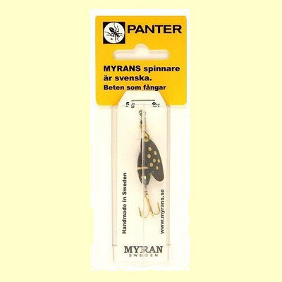
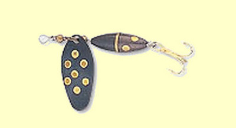
さらにこの一品には懐かしい思い出があった。長岡での学生時代、文化祭で教室の一角に釣り同好会のスペースをもらい、奥只見の釣り場地図やらルアー、フライの展示、長過ぎて使えないハックルなどのタイイングマテリアルと安全ピンで即席ブローチフライを作ってお客さんにプレゼントしたことがあった。すると、ふらりと現れた50歳くらいのおじさんが、壁の模造紙にセロテープで貼り付けたルアー一式を一通りじっと眺めたあとで、
「この中で、１つだけ効くルアーがあるな....」
と、僕につぶやくように言った。それがこのパンサーなのであった。長岡技科大の文化祭に来るぐらいだからおそらくは地元の方で、奥只見辺りを「縄張り」にしているらしく見えたその人物は、そのひと言を告げるとあとは無言で廊下へと消えていった。
他には何かないかな？と陳列棚を見ていると、ふいに明日の釣行に履いていくズボン用のベルトを、事前に宿宛てに発送した荷物に入れ忘れたことに気付いた。これはイカン！と思い、ベルトは売っていないかなとあちこちを探すと、これも往年の「ペンドルトン」ブランドの革製ベルトがあった。ハンドメイドらしくデザインは精緻で仕上げも見事だがお値段も素晴らしく、とても手が出なかったのですぐにあきらめ、後で小出のダイソーで探すことにした。
僕と同様店内を見渡していた谷倉さんは、シマノのスピニングロッドを見つけ出し、予備としてそれを購入した。
釣具店を後にして、昨年も立ち寄ったダイソーに向かい、谷倉さんは魚籠の代用品にする保冷バッグ、ミミズ掘り用のプラバケツ、草掻き、軍手などを購入した。僕はちょうど良いベルトがあったので、喜気として108円で買い込んだ。なにせペンドルトンのベルトは8,000円を越える値が付いていたのだ。(笑)
ダイソーの駐車場で車に乗り込む時にちょうど岡田君から電話があり、彼ら２台は買い物を済ませてこれから銀山平に向かうとのことだった。僕たちはこれからミミズを調達してから後を追いますと伝え、国道を湯之谷村の奥に向けて走り出した。
道すがら、美しく咲き誇る紫陽花の花を眺めつつ、ミミズの居そうな、畑や田んぼの脇の草捨て場を探すのだが、なかなか見つからない。去年大当たりの場所はどこだったかなぁ？などと思っていると谷倉さんが車を停めた。小雨降る中、軍手をはめた手に青いプラバケツと草掻きを持ち、スタスタととあるポイントに向けて歩いて行く。僕はデジカメを持って後を追う。
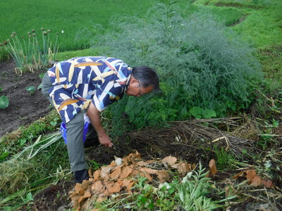
まだ葉っぱの小さなサトイモやネギの植わっている畑の脇で、積み重ねられた草の下から、ジューシーで大きなミミズが何尾も掘り出された。魚の居付くポイントだけでなく、ミミズの居場所も的確に見つけ出す先輩の経験と嗅覚に改めて感心させられた。
道路脇には、６月らしく紫陽花の花が美しく咲き誇っていた。
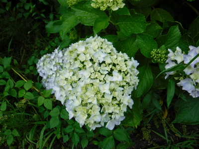
鮮度が良く、アピール力の高い野生のミミズが十分な量確保できたので、いよいよシルバーラインに向かう。急坂、急カーブ、荒れた路面をものともせず、谷倉さんは愛車を飛ばして行く。いざ、トンネルを抜け銀山平に出て北ノ岐川の橋まで行ってみると、何と大増水のダダ濁り！
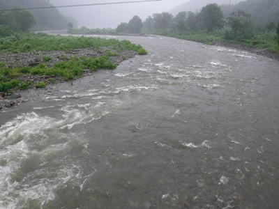
今朝９時の時点で車中から荒沢ヒュッテのおかみさんに電話して天気と水況を聞いたところでは、それほど雨は降っておらず、早朝に北ノ岐川を覗いたご主人の情報でも平水よりも少し多い水量だったそうなのだが。
『こりゃ、今日の夕まづめは苦戦を強いられるな....』
とビビりつつ荒沢ヒュッテに向かう。
懐かしのログハウス型のロッジ前に車を停め、母屋の玄関へと向かう。駐車場脇には大きな水槽があり、今年もお客さんたちが釣り上げて生かしたまま持って来た大物イワナやサクラマスが悠々と泳いでいる。
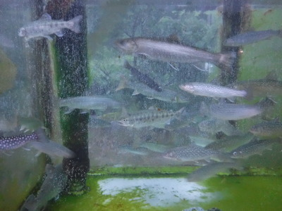
彼らはご主人が手配して下界から運ばれて来る養殖ウグイを生き餌として養われているのだ。眺めて喜ぶだけなら簡単だが、ずっと生かして飼っておくのは大変だろうなぁと、ご主人の労力に思いを馳せた。
出迎えてくれたおかみさんに挨拶をして、さっそく入漁券を２枚買い求め、ロッジの鍵を借りて引き返す。発送しておいた釣り具一式が入った大型のプラ製衣装ケースはすでにご主人が部屋まで運んでおいてくださった。毎年のことながら恐縮した。
取るものも取りあえず、夕まづめの釣り支度を整える。昨年は横着をしてスニーカーで釣ったところ、ぬかるみに苦労したことと、本番でウェットウェーディングした本流の水があまりに冷たかったことから、今年はちゃんとヒップウェーダーにウェーディングシューズという足回りで臨む。
すでに到着していた山口さんと徳田さん、中島さんたちは早くもトローリングに出かけていた。雨がけっこう降っていたので、宮田さんと岡田君は、後から僕たちの釣りを見に行くよ、と言うことだったので谷倉さんと車で船着き場に向かう。
小さな支流もかなり増水しており、谷倉さんはその堰堤下を狙って入渓し、僕は沢の流れ込みを目指して歩いて行く。北ノ岐川の本流も、小沢も増水＋濁りの状況であったが、湖の沖合遠くでは普通の水の色だった。
とりあえず濁った水中でも目立ちそうなドクターミノー・シンキング5cm赤金を小沢のバックウォーターに放り込む。数十投以上辺りを探るが反応は無い。ふと上流を見ると、遠くで谷倉さんの竿が曲がっている。堰堤の落ち込みから抜き上げられた魚影はそれほど大きくはなかったが、色が黒く見えたのでおそらくイワナだろう。
ようし！ と気合いが入り、今度は上流側にできていた、流心脇の小さな淀みにルアーを通してみた。
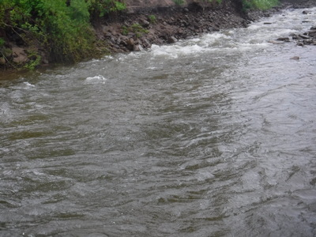
すると小さな黒い頭が足下まで付いて来たが反転して消えていった。
「ああ！ 食わせきれなかったか…」
居ることは居るなぁ、小さかったけど。と思いつつキャストを繰り返し、周辺を観察していると、淀みの一番遠い所で小魚が水面から飛び出すのが見えた。
『おっ！ あれはもしや大物に追われたワカサギか？』
色めき立ってミノーを投射して、それらしいアクションでしつこく何回も引いてみたものの、水面は沈黙したままだった。残念。
雨脚が強くなってきて、レインジャケットのジッパーを閉める。沢の上流の谷倉さんは白いビニール傘をさしながら釣っている。実に器用な芸当だ。すると橋の上に車が停まり、宮田さんと岡田君が見物に降りてきて、傘を差しながらこちらを見ている。手を振って応えるが、今のところ坊主なので少し恥ずかしい。
と、橋の上に谷倉さんの姿も現れ、大きく手を振って、「戻って来いよ！」というジャスチャーをした。これは場所を変えるのだな、と思い、ラインを巻き取って草だらけの坂道を戻る。道路まで出ると、３人が爆笑しており、聞けば谷倉さんが鈎に付けたミミズの全長よりも小さなイワナを釣り上げたとのこと。鈎はしっかり口に掛かっていたそうだからさすがである。（笑）
今度は本流へ向かい、橋詰めから降りて轟々と流れる本流に竿を出してみる。
流心脇に、枝の被さった小さな流れ込みとそれに続く深みがあったので、今度は銀色のメップスに替えて引いてみるがここでも反応が無い。
振り返ると、大岩の前面の反転流に深く沈めていた谷倉さんの竿が大きく曲がっていた。なかなかの抵抗を見せたあとで水面から上がってきたのは、お腹の赤い大ウグイさんだった。（泣）
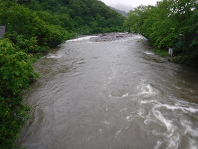
いったん橋の上に戻り、欄干越しに谷倉さんが右岸の巻き返しにミミズを投入するも、再びのウグイ。これは今日はウグイの日だな....と、何気なく岸辺の木立を見ると、あちこちの枝にクリスマスの飾り付けのごとく色とりどりのルアーが引っ掛かっている。
「あれなら樹の根元まで降りていって、枝を曲げれば回収できそうだな！」
「いやぁ谷倉さん、それは危ないっすよ。滑って川に落ちたら湖まであっという間に流されますよ！」
「うーん、それもそうだなぁ....」
いささか未練を残している先輩を説得し、今日の夕まづめ攻撃は納竿となった。
宿へ戻り、熱い風呂を浴びるとトローリング組の皆さんも帰っており、19時過ぎから「最初の晩餐」が始まった。まずは一同７人はビールで乾杯した。毎年のことながら次々とテーブルに運ばれてくる品全てが圧倒的に美味しい。根曲がりタケ、山菜の天ぷら、イワナの塩焼き、虹鱒の刺身....などなど。
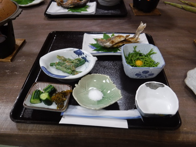
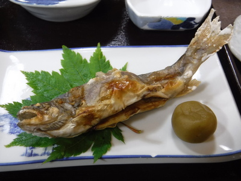
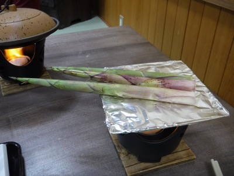
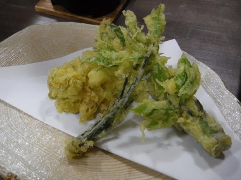
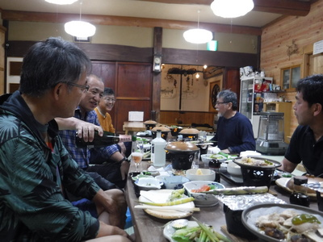
お腹がいっぱいになったので、食堂での宴会はお開きとなり、皆ロッジに戻って明日の準備をした。ご主人が明日の朝食・昼食の２食分の弁当を作って 21時半頃に届けてくれた。これで安心だ。明日の釣行に必要な品々を、発送用の衣装ケースからベストやデイパックにリストに従って移し、忘れ物の無いようにした。
そのあと軽く一杯寝酒を引っかけてから（僕は飲まなかったけど）、めいめい柔らかな布団に入った。天気予報によれば、明日土曜日は朝から午後３時くらいまではなんとか曇りで、その後雨になるそうだった。さぁ明日は４時起きだ！
2019/06/29
29日（土）の朝は一同 4:00 に起床した。昨日の夕まづめで使ったヒップウェーダーと濡れたままのウェーディングシューズを履く。６月の末とは言え銀山平の朝はさすがに冷え込むので雨具を着込んだ。ロッドケースとデイパックを谷倉さんの車に積み込み、後部座席に宮田さんと岡田君、僕が助手席、谷倉さんの運転で 4:30 に出発した。山口さん、徳田さん、中島さんのトローリング組も岡田君の車を借りて船着き場へと出発した。
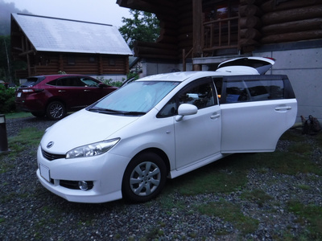
再びシルバーラインに入り、国道を通って約１時間半のドライブで本日の目的地に近づいた。そこで、毎回恒例となっている、小沢の道路下に出来ている滝つぼを攻めるべく、谷倉さんが車を路肩に停める。他の３人が見守る中、いそいそとタックルを取りだし、昨日掘った新鮮なミミズを付け、はるか下に見える落ち込みの白泡が消えるあたりに落とす。
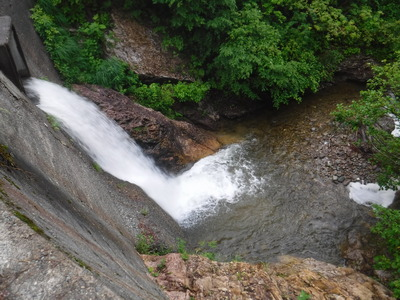
しばらく探っていると、竿先がククンと引き込まれ、合わせの後になかなかの抵抗を見せながら良型のイワナが引き上げられてきた。毎年のこととは言え、釣るべきポイントでしっかり釣る谷倉さんの腕には感心させられた。
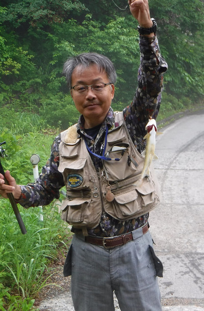
そのイワナを道路上の流れに放ち、再び４人は車に乗り込んで走り出す。
しばらく進むと、空き地があり、朝の５時半というのに１台の赤い四駆が停まっている。
「おっ！ お客さんが来てますねぇ。」
どこにも好きな人はいるものである。人のことは言えないが。
僕たちもその四駆の後ろに停め、ココロを踊らせながら釣り支度を始める。今年の皆さんの足回りは、
谷倉さん：ウールのニッカズボン＋ネオプレンゲートル＋スパイク付きフェルト底先丸型アユ足袋
岡田君：ワークマンで購入した化繊で水切れの良いストレッチパンツ＋キャラバン製のフェルト底ウェーディングシューズ
宮田さん：厚手ナイロン生地のブーツフット・ヒップウェーダー
伊藤：厚手ナイロン生地のストッキングタイプ・ヒップウェーダー＋岡田君と同じモデルのウェーディングシューズ
という出で立ちである。昨年、ニュージーランド用のラバーソールタイプを履いたところ、いきなり滑って転倒して右肘を強打したので、今年はフェルト底のウェーディングシューズにしたのだ。
身支度が済み、谷倉さんと僕は自転車の組み立てに取りかかり、３年前のようなトラブルもなく、すんなり組み上がった。
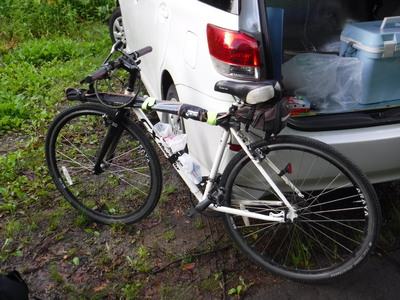
ビニール製の竿袋に入れたスピニングロッドと、去年の雪渓渡りで味わった怖い経験から、今年新たな装備として用意してきたトレッキング用のステッキを、マジックテープで上部フレームに固定する。ステッキのグリップには、余っていた DEGIN の真鍮製ネットリトリーバーを付け、デイパック上部のハンドル部のリングで連結し、釣行時には取り外してウェーディングスタッフとして使う予定なのだ。ハンドルの動きも問題無い。
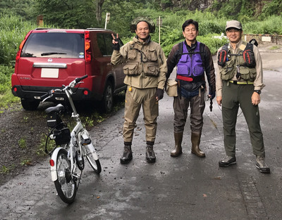
準備万端となり、谷倉さんと僕は上流目指して出発した。徒歩組の２人はすでに林道の彼方を歩いている。すぐに追いつき、追い越して２台の自転車は新緑の中、ゆっくりと谷の奥へと進んでゆく。
しばらくは古い林道も舗装されているが、やがて砂利道となり、尖った小石や出っ張った岩の露出部を踏んでパンクしないよう気をつけながら漕いで行く。道が平坦なら歩きよりはずっと楽だが、急坂登りではいくらギアを軽くしても自転車の方がシンドイかも知れなかった。小休止をしながら林道を必死で漕ぎ上がる。30分ほど経った所で、僕のあまりの苦戦ぶりを見かねて谷倉さんが電動自転車に交代してくれた。モーターのアシストが想像以上にパワフルであり、ママチャリ的な乗車姿勢も楽々だった。
「これはさすがに楽ですねぇ！」
「伊藤の自転車もけっこう楽に漕げるぞ。」
しかし、谷倉さんは昨日、新富士駅から銀山平までの約370km、５時間ほどを１人で運転し、夕方には釣りをしているにもかかわらず実にタフだった。
本流の好ポイントを見下ろしながら、２台は進んで行く。30分ほど電動自転車で楽をさせていただいてから自転車を交換し、再び自分のクロスバイクで漕ぎ出した。
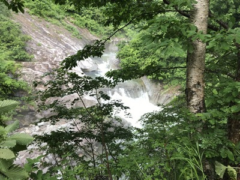
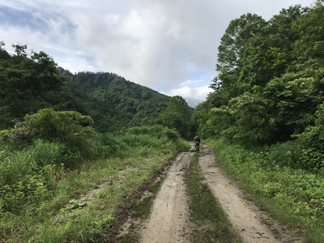
途中、１本の沢を渡る橋に着いたので、小休止して写真を撮す。新緑に覆われ朝靄のけぶる流れが、眼を洗われるかのごとく本当に美しかった。
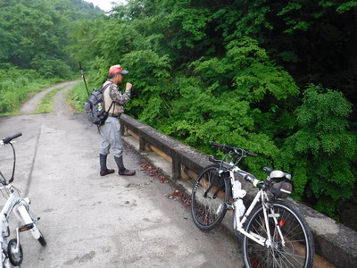
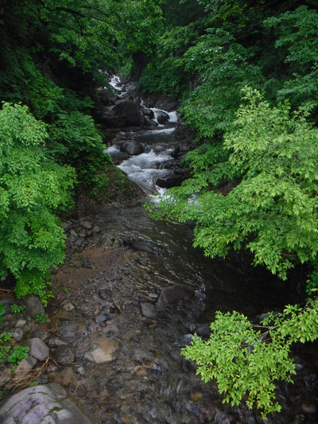
さぁて、いよいよ昨年自転車走行を阻まれた雪渓の近くまでやって来た。
『今年はどうかな....』
恐る恐るカーブを曲がって近づいて行くと、何と、今年はその斜面に雪が無い！
『これはラッキー！ 楽に目的地まで進めるぞ。』
昨年味わった恐怖と教訓から、今年はウェーディングシューズに取り付けられる簡易式アイゼンを購入してデイパックに忍ばせてきたのだが、使わずに済めばそんなにありがたいことはない。
窪地を過ぎ、10分ほど進んだところで１頭のニホンジカを目撃した。そして、去年２つ目の雪渓があった場所にも今年は残雪が無く、楽々と（実際はかなりバテながらではあったが）７時過ぎに入渓予定の沢に到着した。
さっそく自転車を降り、巨岩のように重いデイパックを降ろし、くたっと古いコンクリートの橋の上に座り込む。何が悲しくてこれほど重いのか、読者の皆様には退屈でしょうが、一応詰めたアイテムを書き出してみると、
お弁当２食分
500mlペットボトルのお茶２本
眼鏡型拡大ルーペ（糸結び作業用）
バスタオルとタオル
防水スタッフバッグに入れた着替え一式
ポケットティッシュ（大量）
サバイバルキット
百円ライター・コッフェル・小型ガスストーブ
ガスボンベ、固定用三脚、風防
スティック袋入りインスタントコーヒー、中身のみ４セット
シェラカップ２ヶ
スポーツ飲料900ml ２本
デイパック用防水カバー
地図（印刷してある市販品）
輪行関連参考資料ファイル
防水手帳、ボールペン
防水ポーチ、携帯電話・自転車のキー用
予備のパックロッド５ピース：コーデュロケース入り
予備のスピニングリール：プラスチックケース入り
ホルスター入り熊避けスプレー
などなどであった。おそらく重量は10kgを越えていただろう。（泣）
汗ばんだレインジャケットの前を開け、荒い息を整えつつ、荒沢ヒュッテご主人手作りのおにぎりで朝ご飯とする。ソーセージとゆで卵、ペットボトルのお茶が美味しい。
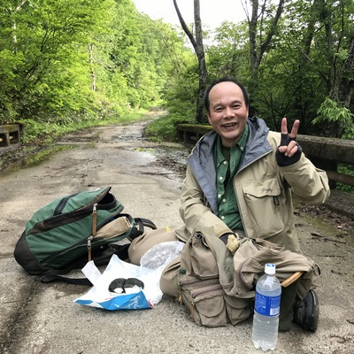
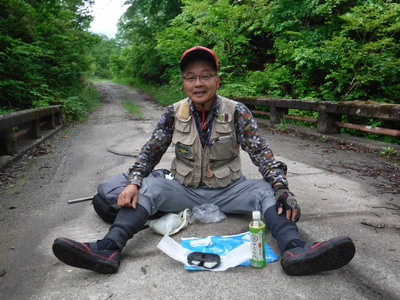
瞬く間に弁当をたいらげ、橋の上に停めておいた自転車２台を少し先の斜面にもたせかけて施錠してから、いざ、入渓である。時刻は 7:30 を過ぎていた。
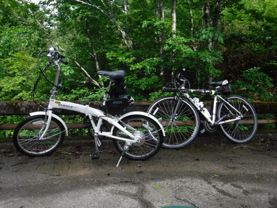
何はともあれ熊避けスプレーを取り出してホルスターをデイパックのウェストベルトに装着し、橋詰めの急斜面を、ズリこけないよう草や枝につかまりながら慎重に降りて行く。河原に無事着地し、竿袋から出したスピニングロッドにリールを装着し、今朝はフローティングミノーのピンクジョイントを結ぶ。というつもりなのだが何せ老眼がひどく進んでおり、ラインをミノーのリングに通すことがまったくできない。情けない限りだが、いったんデイパックを降ろし、釣り用の安い眼鏡型ルーペを取り出して首にかけて、ラインとルアーを結ぶ。気が急いて上手く結べない。(笑)
谷倉さんが「忍びの者」のごとく上流へ歩みを進めるのを見ながら、ベストの水温計で測ってみると９度だった。これではアユ足袋でウェットウェーディングしている谷倉さんはさぞかし冷たいだろうと思われた。小さな沢は一面水の冷気に覆われている。去年は僕もショーツにタイツ、ネオプレンソックスとウェーディングシューズだったので、そのあまりの冷たさに恐れをなし、今日のためにアメリカのCabela's 社から通販で、日本ではあまり売っていない、厚手で丈夫なナイロン生地のストッキングタイプ・ヒップウェーダーを買ったのだ。
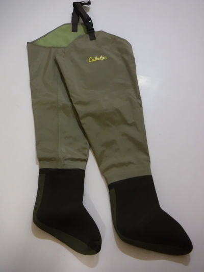
膝の辺りまで水に浸かるとさすがにひんやりとは感じたが、直に濡れるほど冷たくはない。快適に沢を歩けた。
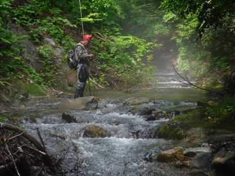
先輩の後を追って早足で遡行して行くと、去年谷倉さんが良型を上げたポイントは、川底の様子が変わり浅くなっていた。
釣り始めてから20分ほど経った頃、ちょっとした深みで谷倉さんが可愛いサイズを釣り上げた。
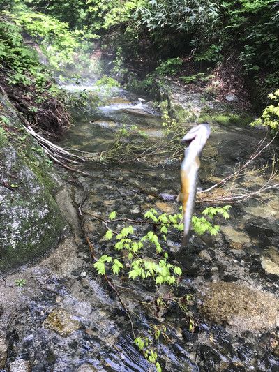
大事にリリースして、そこからは僕に先行させて下さったので、狭い流れを慎重に攻めて行く。
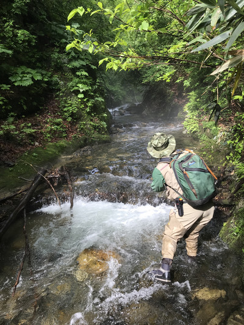
一応それらしいスポットはしらみつぶしにキャストしてみるが、反応が無い。で、とうとう去年先輩が粘った流木の滝壺まで遡って来た。
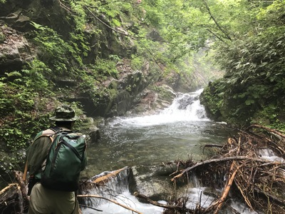
なかなか深いポイントなので、シンキングミノーに替えて探ってみるが反応が無い。流木にルアーを引っ掛けてしまった去年のようなドジを踏まないよう注意しつつ、しつこく10投ほど攻めてから、こりゃ出ませんね、と言って先輩と代わる。
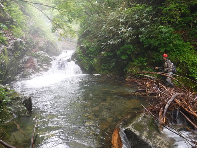
ここなら絶対１尾は居ると思われたので、先輩も餌を取り替え、いろいろな筋を流して探ってゆく。
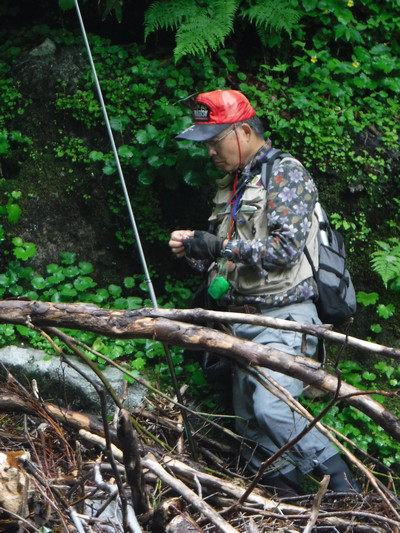
10分あまり粘ったものの、不思議なことにミミズにもアタリすら無く、そこから引き返して本流へと下る。合流点近くの深みなども丁寧に攻めながら、出会いの淵に出た。ここでも寛大に先攻させていただき、慎重に淵の頭、真ん中の最深部、淵尻などへ赤金のシンキングミノーを打ち込んでみる。すると、淵尻の流れの肩のあたり、暗い色をした岩陰から魚影が走り出るのが見えた。
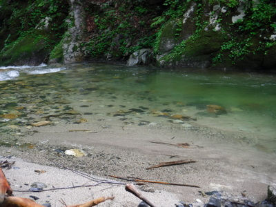
『おっ！ あそこか！』
もう一度同じ筋に打ち込み、ゆっくりと小刻みなアクションで引いてくるとガクンと当たった！ 瞬間的に鉤掛かりしたようで、なかなかのサイズの魚が淵の中を縦横に走り回る。
『えらい引くなぁ！』
と思って寄せてくると、何とスレ掛かり。フックが背中に刺さっている。手元まで来ても疲れることなく横走りするイワナを強引にネットですくい上げた。ジャスト 30cm の白っぽい魚体であった。
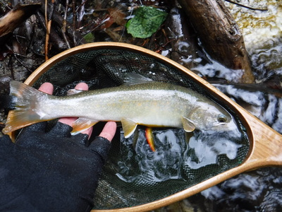
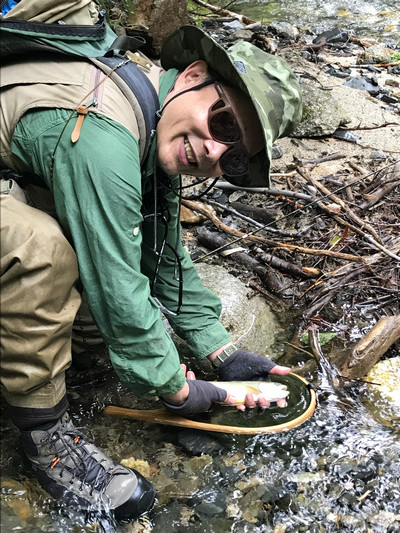
「出ました！ ありがとうございました！」
ご厚情にお礼を述べ、イワナを流れに戻してやった。再びその淵を谷倉さんが攻め直すので、僕は下流を探索しに行った。
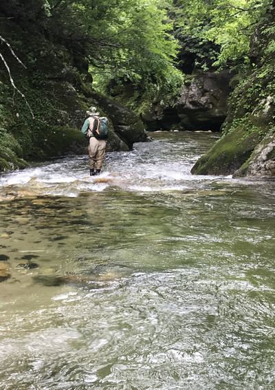
下流にも良い長淵があったがなぜか反応は無く、引き返して先輩を追う。途中で水温を測ると、本流は 10度であった。
途中で一面の霧に覆われた幻想的な光景が広がり、深山幽谷の釣りの雰囲気に包まれた。
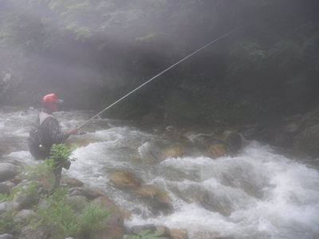
いよいよ去年大物が出た大滝へ到着した。
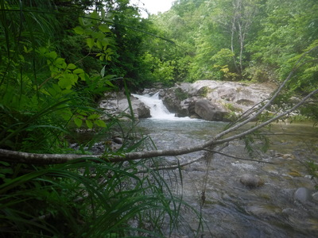
谷倉さんがリュックサックからパックロッドとカーディナルを取り出し、ルアーの支度をして、慎重に手前のポイントから攻めてゆく。
右岸際の深み、昨年37cmが出た淀み、流心からの流れ出しを探ってみるが魚影は出ない。そこで先輩は静かに淵尻の瀬を対岸へ渉り、さらに引いてみる。すると、中央の流れ出しからのチェイスを１回目撃したようだが、喰い切らず、そいつは反転して深みに消えたとのことだった。
そこで谷倉さんは再び餌竿に持ち替えて、左岸の岸壁に登ってから直下の滝壺を攻め始めた。僕は、昨年はここで引き返したので、学生時代にも行ったことの無いこの上流部へ行ってみたくてたまらなくなり、先輩に声を掛けてから１人で上がっていった。
岩盤を登って進んで行くと、淵の真ん中に大きな木が張り出している厄介なポイントに出た。
核心部をブロックするように枝がかぶっていて実に釣りにくい。それほど深い淵ではなかったので、お得意の黄緑色の腹のヤマメカラー・フローティングミノーに結び替え、まずは枝に引っ掛けるリスクの無い淵尻から攻めてゆく。空中を横断している枝の下に着水したミノーを、鋭い出方を見せた１尾が追って来た。しかしヒットまでには至らない。反転して消えたあいつが深みに戻るまで少し間を置いて待つ。それから、枝の下ギリギリを通して可能な限り上流へ打ち込みたいが、僕の技量ではそれが叶わない。また淵尻に着水してしまい、魚から見えない筋しか引くことができない。
それでは！ と、泥棒顔負けの忍び足で、身をかがめつつ右手の崖沿いを、淵の中ほど、枝の下までにじり寄り、流れ込みに投射してリトリーブしてくると、底石の深みから魚影が飛び出した。しかし喰わせきれない。もう一度。またも出たがやはりミノーに喰いつかない。
『あれで何故喰わんのだ？』
さらに10回以上繰り返し誘ってみたがもう姿を現すことはなかった。出方は素早かったし３回も出たので喰い気はたっぷりだったと思われた。静かに上流へ回り込んでから、お得意のダウンストリームキャストで、ほとんど止めるくらいに逆引きをして攻めるべきだったか？
などと後悔をしていると、下流の滝壺を攻めていた谷倉さんが追いついてきた。
「どうでしたか？」
「ああ、32cmが出た。」
おお！ と驚いたが、今年はその１尾と最初にルアーを追ったのと、２尾しか見なかったそうだ。去年あそこで７尾も出たのと比べるとえらい差だが、まぁ毎年毎年こちらの思うようには行かんわなぁ....とあきらめた。
そこからは基本的に僕に先行させてくれて、両岸を歩ける区間では谷倉さんが左岸、僕が右岸に別れて遡行を続けた。
さらに遡って行き、細長い深みが瀬になる辺りで今度は可愛いサイズが喰い付いた。
しばらく進み、開けた瀬尻で本日３尾目がヒットした。
谷倉さんがいわゆる「木化け、石化け」の術で気配を殺しつつ淵を攻めてゆく。
今度は右岸の苔むした崖下に巻き返しが出来ているポイントに出た。流心に突き出した岩に主流が激突し、その裏を水が反転しており、水際では上流方向へと流れている。
『ここは実に怪しい....』
と、シンキングミノーに結び替え、狙いを定めて反転流の一番奥に打ち込む。かなり間を置いて沈めてから引いて来るが何も起こらない。
『ここに何も居ないということは無いぞ....』
２投目でゴツン！ とロッドに衝撃が伝わり、逆巻く水中で二度三度と捻転を繰り返して抵抗した後で幼い顔つきの白いイワナがようやくネットに収まった。ちょうど 30cm あった。
その巻き返しから20分ほど遡り、通らずの大きな滝壺に出た。僕が先に何投も試したが無反応。続いて谷倉先輩が攻める。昨日畑で掘ってきたイキの良いミミズが大きな錘とともに深みに沈んでゆき、白い目印がぐるぐると流れに乗って回っているがピクリともしない。
谷倉さんはもう少しこの滝壺で粘ってみると言ったので、僕は右岸を高巻きし、上流へ抜けることにした。初めて来る区間なので何もかも手探りだが、黒い毛むくじゃらに出くわすことだけは怖かったので、ベストの胸ポケットに結わえ付けてきた熊避け笛を吹きまくりながら茂みに足を踏み入れた。
豪雪地帯特有の、いったん斜め下に向かってから上へ曲がって伸びている広葉樹の間に生えた草むらを藪漕ぎして抜けて行く。ロッドティップを草に絡めて折らないよう、グリップを先にティップを後ろにして持つ。しばらくは急な登りが続き、ちょっと開けた場所に出た。そこから下の河原が見えたので、あそこなら滝壺の上流だな、と見当を付けてゆっくり滑り落ちないよう気をつけながら降りた。
河原に降り立つと、20メートルほど下流に、谷倉さんが粘っているであろう滝壺が見えた。
上流を振り返ると、乾いた岩の上に珍しい色をした蛇が１尾、日なたぼっこをしていた。マムシ、アオダイショウ、シマヘビ、ヤマカガシのどれでもなかった。攻撃的なそぶりは見せなかったので、しばらく観察しているとやがて水際から流れに入り、水面を器用に泳いで対岸にたどり着き草むらへと姿を消した。
ちょうど昼時となっていたので、この広い乾いた岩盤の上で弁当を食べることに決め、谷倉さんを待ちながらお湯を沸かし、インスタントコーヒーを作ることにした。
あいにく近くに沢が無かったので、本流の水をコッフェルに汲んで長時間煮沸した。まぁ上流には人家も何も無いのだから大丈夫であろう。このコッフェルは僕が18歳の時に買ったもので、底には祖父が古い千枚通しで、僕の名前を彫ってくれたのだった。そしてシェラカップも同じ年に、アウトドアショップ「DAVOS」からピーターストーム製のレインコートを通販で買った時におまけで付いてきた品である。ガスストーブやアルミの折りたたみ式風防などは、社会人になってから同僚と御母衣ダム辺りを徘徊していた頃に買ったものだ。大事に使えば道具は長く持つなぁと改めて感心した。ギョーカイの方々には申し訳ないが。
などとバタバタやっていると、藪の上から竿を畳んだ先輩が降りてきて、２人で弁当の包みを広げた。またも、おにぎりが美味しい。結局さっきの滝壺ではアタリは無かったそうだ。
お腹が満たされ、砂糖を入れた熱いコーヒーを飲むと、疲れがじんわり和らいだ。さて、釣りの続きだ。
少し遡って行くとまたまた魅力的な落ち込みがあった。２人して手練手管を繰り出して攻めるが、ここでもなぜか無反応。
その上流に、それほど深く無いが見込みのありそうな淵があった。対岸上流側の薄暗い淀みにはいっぱい白泡やゴミが浮いていた。
下流側の淵で谷倉先輩が１尾上げた後、対岸の淀みにミノーを打ち込み、ゴミの下を通してくると、黒い川底から魚影がダッシュして接近し、反転して消えた。
『おお！ やはり居たか！』
フックには触っていなかったので、きっともう一度出るぞとにらみ、今度はもう少し上流からゆっくりとリーリング。淀みが終わって主流に合わさる辺りでコツッとヒット！
「やった！」
しかし、合わせてから寄せてくるまでにこちら岸から突き出すように生えていた小枝にラインが絡みつき、ティップを動かして外そうと慌てているうちにテンションを失ってバレてしまった。
『あちゃぁ～！ 今のは痛い！』
フッキングしてからバレたのでは、いくら何でも三度目の正直は起こらないだろうなと、半分あきらめつつ念のためにキャスト。すると、今度は上流のゴミの真っ只中でゴツン！
「そこで出るかっ！」
27cmほどの白い魚体が下流の深みへ逃げ込んで抵抗を試みる。追い合わせを入れてから丁寧に魚をいなして弱らせる。大人しくなった頃合いを見計らってネットを引っ張ってベストから外し、落ち着いてすくい上げる。釣った！という実感が湧いてきた１尾だった。ひょっとしたらバレたのとは別の魚だったかも知れない。そうでなければよほど腹を空かしていたのだろう。
気を良くしてさらに釣り上がる。またまた絶悪の位置に枝が横断している深みがあった。
本命のポイントは主流がぶつかる左側の岩壁の奥であろうが、そこへ入れるつもりで投げても枝の下を通すのが精一杯で、深みの真ん中に落ちてしまう。するとどこからともなく１尾現れ、僕が立っている岸のすぐ水際までミノーの後を追いかけて来た。
『そこだっ！ 喰い付けっ！』
と心中で念じてみたが、とうとう喰わせきれず、ミノーを水面から引き上げざるをえなかった。そいつは反転して深みに消えていった。
『ようし。もう一度間を置いて挑戦だ。』
さっき、三度目の正直で釣り上げた１尾を思い出し、イワナが本来のポジションに戻るまで数分待った。
今は左岸（下流を向いて左側）に立っているので、左利きの僕にとっては低く投げ込めるサイドキャストがやりやすい。慎重に奥の暗がりを狙ってリリースしたミノーが岸壁ギリギリに着水する。小刻みなアクションを入れつつリーリング。また出たイワナがミノーを追ってくる。
『今だっ！ 喰ってくれっ！！』
今度も食わせきれず、ルアーが空しく水中から上がってきた。が、しかし、イワナはしばらくその場を去ることなく、目の前にある水深20cmほどの浅瀬で未練がましく消え去ったルアーを探している。時間にすれば１分ほどだったろうか？ わずか１メートルほどの距離で釣り人と魚が対峙し、沈黙の時が流れた。やっこさんからはハッキリと僕の姿が見えるはずだが、物怖じすることなく辺りを見回している。
『こいつはよっぽど腹を空かしているようだな....』
ようやく諦めたのか、そのイワナは再び深みへ戻って行った。
『ようし。今度こそは....』
さらに５分ほど待った後で、右側の岩に身を隠しながら可能な限り上流へいざり寄り、被さった枝の下から、流れの中央部で上流から続いている瀬尻にミノーを打ち込む。すぐにリーリングを始め、アクションを入れる。小さな銀色が深みの核心部を通過する時、ガクンとロッドが引き込まれた。
『やった！』
いつものホームグラウンドにおける釣り下りでの逆引きとは勝手の違う、正統的な釣り上がりなので、喰わせるのに苦労したがとうとうヒットに持ち込んだ。これもまずまずの型で、力強いファイトを味わいつつランディングした。
腹ビレの縁の白さが鮮やかで、尾ビレの大きなイワナだった。上手な人なら最初から核心部を攻めて釣り上げていただろうが、苦労した分、下手くそなりに満足感は大きかった。
じっくり釣っている谷倉さんに先行して川を詰めて行くと、中学生サイズがいっぱい居て、あちこちから姿を現してルアーにじゃれついて来た。と、愛機ミッチェル409のスプールから余分な糸がはみ出してループが出来てしまい、飛距離が伸びない。その場に座り込み、ライントラブルを直すことにした。ついでに、ブラウン系のナチュラル系カラーのラインが見にくくて困っていたので、蛍光イエローのラインを巻き足す。太さは６ポンド。（笑） これなら40cmクラスが来ても大丈夫だろう。
追いついた先輩が右岸から出ている沢へ入ってみるとのことなので、僕は上流を偵察に行くことにした。
13:30頃、どちら岸でも高巻き不可能な大滝に出くわし、ロッドを置いて岩盤をよじ登り、滝壺の底をしばらくの間、注意深く観察する。すると、楽に尺はある大物が川底付近で活発に魚体を左右に動かしながら流下物を漁っている。
『ははぁ....あそこに居るのか....。喰い気たっぷりだな。しかしあいつには下手にルアーを投げずに、谷倉さんに任せた方が良いな。』
そのイワナは流れの速い流心から少し離れた位置、しかし完全な止水域ではない場所に定位し、一心不乱に餌を探している。あたりには25cmクラスも何尾か見える。
垂直に近い苔むした岩盤を滑らないよう気をつけて河原へ降り、先輩を待つ。
10分ほど待っていると、下流に赤い帽子が現れた。ひょいひょいと軽やかな足取りで川を遡行して来た。
「今の沢はどうでしたか？」
「小さいのがたくさん居たけど、藪や流木で釣りにならなかった。」
などと状況を伺った後で、
「この上の滝壺に大物が居ますよ！」
「おっ！そうか！」
いよいよ真打ちの登場である。今度は２人で岩盤をよじ登り、滝壺を覗き込む。
「あのへんに居ますよ。」
「おっ！ 居るなぁ！」
先輩は、新しいミミズに付け替え、白い目印を淵の深さに応じて調節し、いざ振り込んだ。
上流側の流心と淀みの中間辺りから、淵の真ん中まで動いてきた目印がピクピクッと２回動いた。
『！！』
すかさず竿先を上げるとコクッと曲がる。流れの底深くで魚影が反転し、一瞬の白いフラッシュを見せた後に消えた。どうやらバレてしまったようだ。
「うーん、掛からなかったか！」
餌を交換して、もう一度挑戦。ミミズが流れに沈んで行くと小物が数尾群がって来るのが丸見えである。（笑）
『あぁ～！餌を取られる！』
僕が心配していると、谷倉さんはいったん竿を上げて中学生サイズのイワナを避けてから、もう一度振り込んだ。川底で動いていた大きな魚影が目印の下に近づいて行くのが見えた。白い繊維の目印がククッと引き込まれる。しかしまだ合わせない。確実にミミズを咥えるのを待っているのだ。しっかりと間を取ってから、竿を軽くあおり、確実に合わせる。竿の先端から1/3くらいが大きく曲がりイワナが糸を引き込んで走る。とてもここまでゴボウ抜きは出来ないので、谷倉さんは竿を立て糸のテンションを保ちながら、１歩１歩慎重に岩盤をへずり降りてゆく。河原でファイトを続けていると大物もようやく疲れを見せるようになり、渕尻の岸辺まで寄せられて来た。僕も後を追って降りた後、自分のネットを外し、ランディングの助太刀することにしてタイミングをうかがった。
寄ってきた魚体の下からネットを差し入れ思い切って掬う。とうとうネットに収まったイワナは丸々と太った 31cm だった。特に胃袋のあたりがパンパンに膨らんでいる。
これはキープできるな、ということで谷倉さんが素早く小型ナイフを取り出して腹を割き、胃袋を調べてみた。すると、驚くべきことにハルゼミが５尾とブナ虫数尾、その他の川虫多数が出てきた。
去年６月に釣った 37cm もやはりハルゼミの大きいのを丸呑みしていたことから、この時期には水に落ちたハルゼミが大型イワナの好餌になっているらしかった。
『と、いうことは、もし次回フライタックルで挑むのなら、ニュージーランド用に巻いたシケーダパターンのドライフライが効くかも....』
などと皮算用をしてみたが、よく考えると、この１尾のように淵の底に居るやつは、おそらく流れに巻き込まれて水中深くまで運ばれたハルゼミを喰っているのであって、水面まで危険を冒して出てくることは無いだろう、と思えた。しかし昨年の37cmはけっこう浅い場所からミノーを追ってきたので、ドライシケーダにも出る可能性もあるだろう。まぁせめて４番のフライロッドでないとキャストがしんどいだろうが。
ここから上流への遡行は無理だし、もう十分釣ったなぁ！ ということで、引き返して本流を釣り下ることにした。熊よけの笛を吹きまくりながら、草の生い茂る急斜面を四つ這いで掻き登り、林道へ出た。汗が噴き出してくる。タニウツギの美しいピンク色の花が心を癒やしてくれた。
時刻は 14:40 を過ぎており、帰宅後地図を見ると入渓した沢から約1.3kmほど遡行したようだった。２人でトボトボ林道を歩いて自転車まで戻って来た。あとは車輪という人類最大の発明の１つに依存した楽ちんな下りだ。この先にめぼしいポイントがあったらすぐ竿を出せるよう、ロッドを仕舞うことなく左手に持ったままサドルにまたがって軽く漕ぎ出す。パンクにだけは注意して慎重にルートを選んで行く。さあ本流の拾い釣りだ。
しばらく進むと、先を行く谷倉さんが自転車を止め、本流を指さした。どうやらここから再度入渓するらしい。僕も林道脇の草むらにクロスバイクを倒してから先輩の後を追う。林道から河原まで人（あるいは動物）が踏み固めて出来た小径が有り、楽に降りられた。水際まで来てよく見ると、ここは３年前に岡田君がテンカラで１尾掛けたポイントだったことを思い出した。
またも谷倉さんが譲ってくれたので、先にミノーを投げさせていただく。僕たちが立っている左岸は大きな岩盤となっており、そこへ主流がぶつかり、深い淵を形成している。とりあえずロングキャストで対岸の淵尻に投げ込み、流れに乗せながら扇形に探ってくる。すると、瀬尻で多数の中学生サイズがドクターミノーに纏わり付いて来た。しかし、掛からない。５回ほど連続して同じ筋を流していると、だんだん現れるチビイワナの数が減ってきた。（笑）
それでは！ と狙いを変え、流れ込みから中央の深みまでの筋を通してみた。突如流心の深みから25cmクラスが出現し、追ってきたがなぜか嫌われて、そいつは反転して去って行った。しつこく攻めたが２度と姿を見せることはなかった。そこで、僕も３年前にこの上流の瀬で、あの日の最初の１尾を釣っていたことを思い出し、その淵を谷倉さんに攻めてもらうことにして、上流に向かった。淵の頭から振り返ると、ちょうど先輩が１尾良型を上げている様子が見えた。さっき出たやつだろうと思えた。(笑)
約200mほど上流へ遡り、ズラーッと広がっている瀬を攻めてみるが無反応だった。まだ時期が早いので魚たちは瀬に出ていないのかも知れなかった。
戻ってみるとすでに先輩の姿は無い。おそらく下流にある流木が沈んでいる２段の滝壺へ向かったのだろうと思い、浅くなっている瀬尻を渡り、右岸へ移る。
滝壺では谷倉さんが岩盤にどっかり腰を据えて糸を淵に垂らしている。ふと、野生の呼び声が聞こえたので、その場にロッドを置きベストを脱いで、藪に隠れてキジを撃つ。（笑）
すっかり身を軽くしてから戻ってみると、谷倉さんの長い竿が大きく曲がっている。
『おっ！ また釣れてるな！』
水面近くまで引き込まれていた目印が次第に上がってきて、水面でイワナが激しい抵抗を見せる。しかし、道糸1.5号には敵わず、ぐぃ～っと引き抜かれて岩盤に堆積した流木の間に落ちた。鉤を外して水溜まりに入れて写真を撮す。これも立派な尺上だ。
再度仕掛けを振り込む。しばしの流し。そしてアタリ。またも 30cmクラスが掛かり、竿を引き絞る。ところが竿先にトラブルが発生し、魚を抜き上げることが出来ない。僕が岩棚の端の限界まで近寄って糸絡みを直そうと試みるが手が届かない。
「伊藤！ 危ないから止めとけ！」
その声で思いとどまり、様子を見ていると、谷倉さんは振り出し竿の手元を縮めながらなんとかトラブルを解消しようと苦戦している。
「あっ！」
次の瞬間、先輩はバランスを崩して背中から岩盤の下へ倒れ込んだ。
「大丈夫ですかっ？！」
リュックサックを背負っていたのと、落ちた場所にゴミが堆積していたおかげでどこにも怪我は無かったようで、素早く立ち上がった先輩はファイトを再開し、こちらに竿の穂先を向けてきた。まだイワナは外れていない。谷倉さんの立ち位置が一段低くなった結果、僕の手が竿先届くようになり、絡まっていた道糸をほどくとようやくイワナを抜き上げることが出来た。
これも良い型だった。魚を釣り上げたのは良かったが、何より先輩に怪我が無いのが幸いだった。ここで、もし動けないようになってしまったらエライ目になっていただろう。
その後、同じくらいのサイズを２尾追加し、この滝壺では爆釣となった。
我に返って時計を見ると 16時を回っていた。折から雨脚が強まって来たので、増水して対岸へ渡れなくなる前に林道へ戻ろう、と滝壺を後にしてさっきの瀬尻を渉り、小径を登った。
大粒の雨の中、本流を偵察しながら自転車で下って行き、何とか降りられそうな細長い大淵を見つけ、そこを攻めることにした。草に覆われた小さな流れ伝いに苔むした岩盤まで降りた。流れの緩い対岸の深みへシンキングミノー赤金を投げ、淵尻を通してみる。いかにも居そうなポイントだが、反応が無い。10投ほど試してから今度は流れ込みから続く深みへと沈めてみる。やはり魚信は無い。そこで谷倉さんに餌釣りで攻めてもらうことにして、下流から見学した。
主流の際、深いところに沈めて流していた目印が動き、またも竿が曲がった。水面近くで粘り強い抵抗を見せた後に良型が抜き上げられた。
『うーん。やはり底まで沈めないとダメか....』
などと思い知らされつつ上流を見ると、脇の流れ込みから深場まで緩流帯が続く、なかなか良さそうなポイントがあったので、足下に注意しつつ近づいて行った。上から覆い被さっている枝に注意しつつミノーをサイドスローで低く打ち込み、丸石がいくつも沈んでいるあたりを通してみるが、なぜかここでもアタリが無い。追って来る影も見えない。もう１度、２度、３度。沈黙が続く。
『こりゃアカン。』
なぜあそこで出ないのか不思議だったが、あきらめて先輩のところまで戻る。
「俺はもう少しここで粘ってみるから、伊藤は先に行って、めぼしい所で釣ってて。」
と言われたので、再び水が流れる急斜面をよじ登り、自転車で林道を下って行った。
昨年の帰り道に、谷倉さんと宮田さんが竿を出した大淵までやって来た。ここは山から水量の豊富な沢が流れ出ており、林道がそこだけコンクリート舗装されているのでよく覚えていた。付近を偵察すると、200mほど上流に釣れそうな予感がムンムン！と感じられる連続した段差が見えた。
『あそこならきっと出る！』
根拠の無い野生の勘で、しばらく林道を歩いて上流に戻って行くと、路肩を補強しているコンクリート擁壁の終端に小径があった。
『ははぁ、皆さんここから入るのだな。』
その皆さんには、釣り人ばかりではなくニホンジカやカモシカ、ツキノワグマなどもろもろの野生動物も含まれるのだろうが、絶好のポイントを目の前にして、熊避け笛を吹くのも忘れ、ワクワクしながら河原を目指して降りて行った。
対岸には大岩が有り、その上には幅の狭い側流が流れ込み小さな暗い淀みを作っている。本流の荒く速い流れの中を注意深く歩みを進め、出来る限り接近してからドクターミノー・ヤマメカラー、腹は黄緑色のシンキングを流れ込みに投げる。少し沈めてからロッドティップを高く掲げ、流心に落ちたラインにドラグが掛かるのを回避し、ミノーとのダイレクトなコンタクトを保ちつつ引いて来る。大岩前面のえぐれ付近を通過させ、水面から出ている蛍光イエローのラインが流心に差し掛かったのが見えたのでリーリングを止め、しばし流れに乗せて下流へ送り込む。ラインが張り、再びミノーの小刻みな揺れが伝わってくる。流心のこちら側を小さな銀色の背中が泳いで来るのが見えたがこれは自分のミノーだった。（笑）
あの暗い色をした淀みで出ないかなぁ？？と不思議に思いつつさらに数投攻めてみる。しかし何も起こらない。学生時代に谷倉さんから教わった「秘技：対岸釣り」の教義を思い出し、数歩下流に移動してから大岩下流の巻き返しを狙う。着水、少し間を取って沈降、それからリーリング。
巻き返しから流心に入ったところで再び下流へと送り込み、落ち込みの手前まで行ったかな？と予想をつけて、ごくゆっくりと、控えめなアクションで流心脇を引き戻してくる。
「ガツン！」
ロッドに衝撃が伝わり、緩めのドラグが鳴ってラインが引き出される。
『やったね！』
速い流れの力を最大限に利用して抵抗するイワナを、無理せず我慢しながらいなし、慎重に弱るのを待つ。野生のレインボーのようにジャンプしないことが救いである。取り込みのために下って行っても良いのだが、場を荒らしたくないので足下まで寄ってくるのを待つ。ラインを巻き取りすぎてもバレやすくなるし、魚が遠いとネットが届かない。懸命に差し出したネットにとうとう魚体が収まった。
谷倉さんほどの良型ではないが、まずまず嬉しいサイズであった。川岸まで戻り、水溜まりに置いて写真を撮る。
雨脚はどんどんと強くなっており、大粒の雨が音を立てて降っている。ここならまだ出るだろう....。もう一度同じようなコースを流してみると、即座にヒット！ほぼ同じサイズがファイトの後に上がってきた。
連続ヒットに非常に気を良くして、一段流れを降りてから、次のポイントにミノーを投射する。控えめなアクションの逆引き。ゴツン。今度の１尾は流れに乗って落ち込みを下り、大岩の下流側へと回り込んだ。ラインが岩に擦れる。
『これはマズいっ！』
ヒヤヒヤしながらロッドを右手に持ち替え、岩を回避するよう大きく腕を伸ばしながら後を追って歩み下る。ランディングした瞬間は背中が青く見えた１尾がネットの中で荒い呼吸をしている。
『この調子で自転車まで釣り下れば、かなり数が出るぞ！』
とワクワクしながら段差をまた１つ降りて、次の落ち込みの肩を引いてみる。主流の間にどっかりと座っている大石の陰でガクンッというアタリ。今度は真っ黒な魚影が水中を暴れ出した。ヒットした位置が近かったので、遠くからいなしつつ寄せて弱らせることが出来ず、体力十分のまま奔放に走って右往左往するイワナをやや強引に寄せてネットで掬う。またまた岸に戻ってカメラを取り出す。さほどの大物ではなかったが、顔つきのいかつい黒い背中のイワナだった。
居付き場が黒い岩だったので、保護色で体も黒くなったのだろうと思えた。リリースしてからネットの水気を振り払い、ふと林道の方を振り返ると、谷倉さんの赤い帽子とレインジャケットが見えた。腕を「戻って来い」というように大きく振っている。狙ったポイントを狙ったように引いて、25分ほどで連続４尾という饗宴を味わってしまい、もう少し釣りたかったが、雨はますます強くなっていた。おそらく宮田さんと岡田君はもう車に戻って僕たちの帰りを待っているに違いなかったので、後ろ髪を引かれる思いで河原を後にした。
小径から林道に上がり、谷倉さんに釣果を聞くと、最後の淵で、やはり雨が強くなってきた頃から良型が連続して出たとのことだった。
２人が自転車に乗ったのが 16:30頃。そこからひたすら自転車で林道を下って行く。途中、またもニホンジカに遭遇した。そこここから流れ出して林道を横断している沢に乗り入れて越して行く。クロスバイクの車輪のリムが濡れる上、ややブレーキパッドがすり減っていてブレーキの効きが甘く、スピードが出過ぎるのに気を付けながら下る。パンクも怖い。ここでパンクしたら強い雨の中タイヤチューブの交換作業を強いられる。さりとて歩いて押して行くには車はあまりにも遠い。
かなり下流まで来て、本流が遙か下に見えるようになってきた。舗装区間が続き、スピードが出る。今朝、谷倉さんの電動自転車に乗せてもらった時、前後輪ともちょっとブレーキの効きが悪いかな....と感じたので心配しながら後を追う。急坂になってますますスピードが上がった。ここで先輩が谷底に突っ込んだらたたじゃ済まんな....。運良く途中の木に引っ掛かっても僕の力だけでは引き上げられないので、とりあえず無事が確認できたら何かで落下地点の目印を付けておいて１人で車まで戻り、電話の通じる場所まで行ってから警察か消防に助けを求めるしか無いな、などと考えていると、先輩が両足を突っ張って路面に押しつけスピードを落とそうと苦戦している。あわや転落か！とヒヤっとしたが、なんとか路肩の広い場所でスピードを殺して止まることが出来た。
「今のは危なかったですね！」
「ああ、何とか止まった！」
そこから車までは、自転車での下り坂というのにとても長く感じられた。３年前は今よりも10kgも体重が多いデブ体型だったのに、この行程を歩いたのだから我ながら感心する。
まだ日の長い時期だったが、雨天ということもあり、何となく夕暮れの気配が漂い始めた 17:30頃にやっと、ようやく何とか、車までたどり着いた。くたびれて車中で仮眠していた２人を起こし、釣果を尋ねると、宮田さんは？尾、岡田君は、彼にしては非常に珍しくボウズを喰らってしまったとのことだった。
今度はこちらの釣果を聞かれたので、朝のうちは渋かったけれど、最大は谷倉さんの 32cm。雨が強くなってきた３時過ぎからは爆釣が始まったよと答えた。
「あと30分ほど帰りが遅かったら、荒沢ヒュッテに救援を頼みに行こうと２人で相談していたんですよ！」
宮田さんが真面目な顔で言った。あそこで撤収した谷倉さんの判断は正しかったのだった。
大雨の中、クロスバイクをバラして洗いもせずに輪行袋に仕舞う。ブレーキパッドにはゴミや木の葉がいっぱい付着していた。簡単にたためる谷倉さんの電動自転車をまず積み込み、その上に斜めに置くように輪行袋を押し込む。さらに重いデイパックを隙間に詰める。これで良し。
忘れ物が周辺に無いか確認して、素晴らしい釣りの舞台を後にした。
国道を戻り、シルバーラインを登り、荒沢ヒュッテに着いたのは 19時前だった。トローリング組の徳田さんと中島さんも釣りを終えて戻っていた。徳田さんの釣果は、いかつい顔の35cm級サクラマス、尺ほどのイワナ、特大サイズのウグイが２尾だったそうだ。
後から写真を見せていただくと、トローリングならではの雄大な風景に圧倒された。深山幽谷に分け入って行く渓流釣りも面白いが、広い湖面を縦横無尽に航行しながら探ってゆくトローリングも、あの釣りならではの醍醐味があるのだろうと実感した。
こんなポイントに出くわしたら、僕ならボートを留めて丸１日をキャスティングに費やしてしまうだろうと思う。（笑）
今日の午後に銀山平に着いた丸山先生と坂田さんは、丸山先生だけが中島さんの船に同乗してトローリングを体験され、坂田さんは北ノ岐川を餌釣りで攻めてみたそうだった。お２人はすでに宿に戻っておられ、食堂にて談話されていた。山口さんは残念ながら今日は用事があるということで釣りはせずにゆっくり朝食をとってから帰宅されていた。
釣りから帰ってきた皆さんはさっそくお風呂に向かった。僕は混むだろうから後で入ることにして、食堂の超大型テレビにデジカメをHDMIケーブルで接続し、今日の写真・動画を再生して、丸山先生と坂田さんに見てもらった。小さなデジカメからこんな大きなテレビに鮮明な画像が映されたので、時代遅れの僕は現代のテクノロジーに感動した。
この10年ほどは今日僕たちが釣った川には行ってないなぁ....という坂田さんは、テレビに映る風景を見て、どれがどの沢で、どのポイントが本流のどの辺りなのか、逐一正確に覚えておられるのにはとても驚かされた。
坂田さんは、僕と谷倉さんとが朝一で入渓した小沢の、そこで引き返すことにした流木が堆積した淵の映像を見て、あそこは夏場になると水量が減って右岸側を高巻きできるようになり、さらに上流にかなり高い滝があって、そこが本当の魚止め、釣り人返しなのだと教えてくださった。
「ああ！ やっぱりそうでしたか！」
僕はそれを聞いて納得した。学生時代、確かある年の９月だったと思うが、先輩の相沢さんと本流を攻めたことがあった。その沢に出くわした時、僕だけ入って行き、高くて暗ぼったい滝壺にたどり着いた。当時、夏場はテンカラ専門だったので、実績のあったピーコックハールの胴に茶色のハックルを巻いただけの素朴な毛鉤を巻き返しに落とすと、
「バシャッ、バシャッ、バシャッ！」
と３連続で大きな飛沫が上がり、４度目の水しぶきで毛鉤が水中に消えた。すかさず合わせ、3.2mのテンカラ竿を淵の上に張り出した枝に引っかけないよう注意しながら慎重に取り込むと、ネットの中で暴れていたのは尺オーバーの見事な雄イワナだった。
最初に連続した飛沫がそのイワナだったのか、別の３尾？ だったのかは分からなかったが、とても興奮する光景だったので、そのことだけは今でも鮮明に覚えている。昨年も今年も、あの沢にはもっと高い滝があって、そこで戻っていたようなおぼろげな記憶があったので、ようやく得心することが出来た。
さて、熱いお風呂で釣りの疲れを癒やし、皆さんが食堂に揃った。今年の大宴会の始まりだ。時刻は 19:40 頃となっており、夕方まで粘る釣り人のために食事時間が遅くなってもにこやかにお膳を出してきてくれるヒュッテのご主人とおかみさんに感謝した。
今日の釣果やハプニングの話題で盛り上がり、乾杯が何回も繰り返され、ビールや清酒、焼酎の瓶が次々と横に倒れていった。今夜は魚野川産の鮎の塩焼き、山菜の和え物、キムチに大根の漬物、蕗の煮付け、チキンから揚げ、お刺身、牛肉と椎茸のホイル焼きなどなどのご馳走だった。
日頃はそれぞれの勤務先で重要な役職に就かれ、激務をこなしておられる皆さんだが、こうして杯を傾けて談笑していると、毎週のように新潟の谷から谷へと釣り歩いていた学生の日々がつい昨日のことのように思えた。植村直己氏の名著ではないが、「青春を川に賭けて」といった学生時代だったのだ。
あっという間に賑やかな１時間半が過ぎて、食堂での大宴会もお開きとなった。皆ほろ酔い加減でロッジに移り、二次会の始まりである。それぞれ持参したアルコール類や小出のスーパーで買ってきたツマミを味わいつつ釣り談義や昔話に花が咲く。
僕はまだ風呂に入っていなかったので、着替えを持って母屋に戻り、手早く入浴を済ませてロッジに戻った。二次会の盛り上がりも最高潮に達しており、『ここぞ！』と衣装ケースから大封筒に入れておいた表彰状とA4版プリント写真、記念メダル、忠さんのスプーンなどを取り出した。名誉顧問の丸山先生にプレゼンターをお願いし、３年前の大物賞：湖部門、宮田さんのキャスティングによるイワナ47cmが表彰された。続いて昨年の大物賞：渓流部門、不肖伊藤のイワナ37cmも表彰して頂いた。
あいにく今年は、谷倉さんが提唱されたキビシイ受賞基準：渓流35cm以上、湖はイワナ45cm以上、サクラマス40cm以上 を満たす１尾に恵まれず、受賞者無しということになった。すると、坂田さんが、
「あれ？ ボクの３年前の本流で釣ったサクラマスはダメだったの？」
と尋ねられたので、僕は完全に失念していたことをお詫びした。後日画像を送っていただき、A4版プリントと表彰状を作成し、ご自宅に送付いたしますと答えた。
和やかな酒宴もあっという間に時間が過ぎて時計は10時を回り、さすがに皆さんお疲れだったようでそこでお開きとなった。めいめいふかふかの布団に入って眠りに就いた。
2019/06/30
最終日は皆さん朝寝をさせてもらい、ゆっくり起床した。ご主人には朝食を８時半頃でお願いしておいたので、洗面などを済ませ、母屋の食堂に向かう。
食堂の陳列ケースに所狭しと飾られたビンテージルアーやロッド、リール、壁の剥製などはいつ見ても感嘆させられる。
おかみさんが朝食の品々を運んで下さって、一同テーブルに着き、美味しいお味噌汁や米どころ魚沼の素晴らしいご飯をいただいた。ニジマスの甘露煮がとても柔らかく味が染みており、子供の頃におふくろが作ってくれた、アマゴの焼き枯らしを甘露煮にした一品を思い出した。
皆さんが揃っていたので、僕はまたデジカメをテレビに接続し、昨日の様子を映し出した。皆さん大笑いしながらたいへん興味深く見て下さったので、HDMIケーブルを持参して本当に役立ったなと嬉しかった。
朝食をお腹いっぱいいただき、ご主人がロビーで記念写真を撮して下さった。
その後、岡田君が昨年のように宿泊費やお酒の勘定を計算してくれて、お金を払うことになった。ところが僕の分については、いろいろ幹事役ご苦労さんでしたということで、かなりのディスカウントしてくれた。おまけに賞状やらプリント写真用紙、メダル等にかかった費用として、１人当り千円を集めて渡して下さった。それでは今後も永年幹事を務めさせていただきます！ということになった。
それから、おのおの販売されているルアーや土産物を買い求めた。僕はショーケースの中に、またしてもレア物の「パンサー」を見つけたので、これは買っておくしか無いなと各サイズ５ヶと、イワナの甘露煮３パックを選び、レジのおかみさんにお願いした。
徳田さんは、釣り具を往復宅配便で送付しており、ここまで集荷のトラックが来るそうなので、尋ねてみると発送もできるとのこと。送り状はあらかじめ書いておいたので、荒沢ヒュッテからの発送をお願いした。
一同はロッジへ戻り、部屋の片付けと荷物の整理を始めた。たくさんのお酒の空瓶やツマミの空き袋などをを集め、ゴミ袋に入れる。ハンガーに掛けてあった半乾きの衣類なども仕舞い、忘れがちなスマホの充電器などもコンセントから外してバッグに入れた。玄関先に置いてあったウェーダーやシューズ、雨具などは濡れて重いまま荷造りせざるを得なかった。
僕の発送用衣装ケースもパンパンになったけれど、なんとか全部の荷物を押し込んだ。一抱えもあってやたらと重いケースを母屋の玄関まで運び、往路の送り状を剥がしてその上に帰りの送り状を貼り直した。
後日気付いたのだが、この送り状は小出のコンビニから発送する予定で書いた元払いの用紙であり、荒沢ヒュッテさんが料金を立て替えて払ってくれたのだった。届いた荷物を見てそれが分り、自分の間抜けぶりに呆れたが、現金書留で料金を送って一安心した。
昨年と違ってあまり天気が良くなかったが、ご主人とおかみさんにお礼を述べ、来年もよろしくお願いいたしますと言って、それぞれの車に乗り込み、9:15に銀山平を後にした。
小出の道の駅へ寄ってみると、三条市や燕市で生産された製品を売っているテントがあり、そこで懐かしい折りたたみ式小型ハサミを売っていたので思わず買ってしまった。このタイプは刃を仕舞えるので安全かつコンパクトであり、切れ味は三条・燕の製品なら安心だった。後日豊橋に帰ってからの釣行で、ニンフ・フィッシングに使うヤーン・インジケーターを小さく切る際に、その切れ味は証明された。
谷倉さんは帰りもハンドルを握り、ずっと運転を続けている。つくづくタフだなぁと感心させられた。途中、サービスエリアにて軽い昼食をいただき、よもやま話をしながらドライブを続け、14:40頃に新富士駅に着いた。先輩にお礼を述べ、来年もぜひ行きましょうと約束してお別れした。
旅に出かける時の心の高揚が無いので、行きよりもはるかに重く感じられる輪行袋を担ぎ、ヨタヨタと切符売り場に向かう。例によって車両最後尾の席を指定しようと尋ねてみたが、すぐに来るこだま号は自由席の車両が多いので座席指定でなくても大丈夫でしょうと言われ、自由席の切符を買い、エスカレーターでホームに上がり、列車を待った。
こだま号がホームに着き、自由席の車両に乗り込むと、駅員さんの言ったとおり空いていて、ラッキーなことに最後列が空いていたので、座席背後のスペースに輪行袋を慎重に置いた。ぐったりと座席に座り込むとすぐに眠気に襲われた。しかし行き同様乗り過ごすわけには行かないので何とか１時間の間、目を開けて耐え続け、雨の降りしきる豊橋駅に着いた。タクシー乗り場に行ってみると、２番目に並べたのになかなかタクシーが来ない。20分あまり待った後にようやく乗ることが出来て、17:00過ぎに帰宅した。
ガレージに輪行袋を運び、今年も良く働いてくれたクロスバイクとロッドケースを取り出す。車輪とフレームの組み立ては明日以降にして、とりあえず部屋に入る。布袋からスピニングロッドを取り出して乾いた布で拭き、水気を取り除く。綺麗になったコルクグリップを握ってみると、原生林に囲まれた河畔の胸躍る光景と、降りしきる雨の中、ゴツンとヒットしたイワナたちの感触が掌に甦った。
釣行日誌 故郷編 目次へ
サイトマップ
ホームへ
お問い合わせ